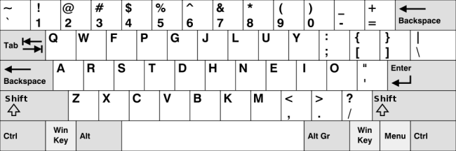

keyboard-layout layer
Table of ContentsClose

1 Description
This layer configures some keybindings in spacemacs to make it compatible with
keyboard layouts that differs from the traditional en-us keymap.
2 Installation
To use this configuration layer, add it to your ~/.spacemacs. You will need to
add keyboard-layout to the existing dotspacemacs-configuration-layers list
in this file. You can then select the desired layout by specifying the
kl-layout variable:
(setq-default dotspacemacs-configuration-layers '( (keyboard-layout :variables kl-layout 'dvorak)))
3 Configuration
3.1 Enable/Disable package configurations
This layer can be customized with two variables:
- kl-enabled-configurations
- kl-disabled-configurations
The first one is used to set the list of configurations to activate, and the
second one to prevent loading certain configurations. If the
kl-enabled-configurations is nil (by default), all configurations are loaded.
Otherwise, only the listed configurations are loaded. Any configuration listed
in kl-disabled-configurations will never be loaded, whether it is in the
enabled list or not (empty by default).
(setq-default dotspacemacs-configuration-layers '( (keyboard-layout :variables kl-layout 'dvorak kl-disabled-configurations '(org magit))))
3.2 Add/Override key bindings
It is possible to override or add bindings by defining functions named
kl/pre-config-<NAME> and kl/post-config-<NAME> in dotspacemacs/user-init.
They are respectively called just before and after the actual configuration of
keybindings in this layer, so you don't have to think about when to apply the
configuration by yourself. <NAME> is the name of the configuration you want
to customize, they are listed under the Configuration section.
Example:
(defun kl/post-config-company () "Company delete backward." (kl/set-in-state company-active-map (kbd "C-w") 'evil-delete-backward-word))
Note: If you define some of these functions in your own layer, be sure that the
keyboard-layout layer is placed after it in the
dotspacemacs-configuration-layers list.
4 Concept
This package first switch traditional hjkl movement keys with their equivalent
in destination layout, and then try to correct the bugs introduced by these
changes in other parts of Spacemacs. This layer only tries to do these changes
when the letters are used for doing a movement.
The equivalent remapping is also made for uppercase letters, CTRL+KEY,
META+KEY and leaders keybindings (SPC …) whenever it makes sense to make
such changes.
In some cases the key remapping will not follow these conventions, mainly because there are better alternatives, or because some moves don't make sense.
Example: In the magit status buffer, the c is used for commit by default,
but if we want to follow the conventions, it should be remapped to "move left"
in bepo. As it is not useful to move left on magit because operations are done
line by line the c is not remapped.
5 Keyboard layouts
The keyboard-layouts available with this layer are the following:
5.1 bepo

bepo is a keyboard layout optimized for the French language.

The mapping correction is the one proposed for vim on the official bepo wiki.
- Map the movements keys under the right hand's fingers:
c → ht → js → kr → l
- Map lost functionalities back to some keys:
h → rj → tk → sl → c
Some bepo keys are not used in traditional mapping, mainly because they are not
on the en-us keyboard layout. They are used as aliases for other shortcuts:
- Map unused
ékey as an alias ofw, more useful in vim mode:é → wÉ → W
- Map indentation on direct-access keys:
» → >« → <
Some default configurations are also not optimal for vim, so the following defaults are changed:
- Change
evil-escapeescape combination to something faster to type, while being nearly nonexistent in French or English words:fd → gq
- In
avy, the key used to select words/lines are remapped to the 8 characters under the fingers:a u i e t s r n
Note: One difference exists with the wiki version: the w is not remapped to
C-w to avoid having to change its meaning in other modes. Spacemacs provides
already a SPC w key binding for working with windows.
5.2 dvorak
dvorak is a keyboard layout optimized for the English language. dvorak
programmer is an optimized keyboard layout focused in programming and it's a
variant of the more general dvorak (us) keyboard layout. This configuration
will remap keybindings for the dvorak-programmer variant.

5.3 colemak
colemak is a modern alternative to the QWERTY and dvorak layouts. It is
designed for efficient and ergonomic touch typing in English. More info can be
found at the Colemak website.

6 Package Configurations
The available configurations are:
- ace-window
- avy
- comint
- company
- elfeed
- evil
- evil-escape
- evil-evilified-state
- evil-surround
- eyebrowse
- flycheck
- helm
- imenu-list
- ivy
- magit
- mu4e
- neotree
- org
- org-agenda
- ranger
- twittering-mode
7 Keybindings
This layer is using functions that try to automatically remap keybindings in a lot of modes, so it's difficult to list all changed keybindings. And
- You chose to use a different keyboard layout.
- You chose to be on the dark side by using evil (because they have :cookie: obviously).
- You chose to use a layer, written with :heart:, that try to solve the induced mess.
So the price you have to pay is the absence of a keybindings list.
8 Sources
The keyboard-layout logo is coming from openclipart.org and is under the public domain. The bepo logo and the keymap images are coming from the bepo official website. The Colemak keyboard layout image is from Wikipedia. They are all licensed under the CC-BY-SA.
{kind=link}